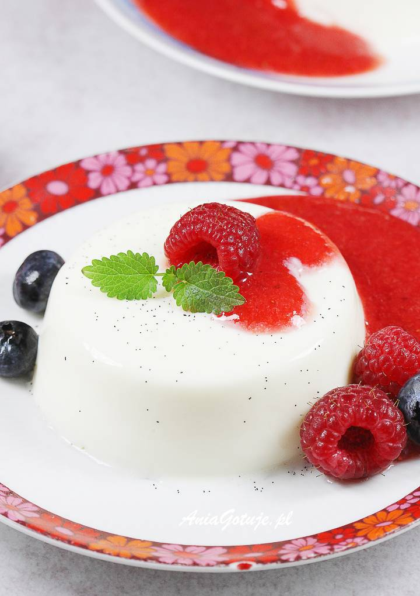
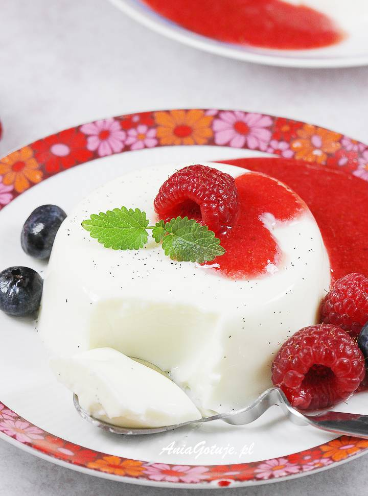

Panna Cotta
Panna Cotta to przepyszny, delikatny deser podobny do sernika na zimno.
Wspaniale smakuje z dodatkiem ulubionych owoców.
Mój przepis na ten nieziemski, włoski deser jest sprawdzony i godny polecenia. Zapraszam!
Kilka informacji przed rozpoczęciem gotowania
- Czas przygotowania: 20 minut
- Czas tężenia deseru: 2 godziny 30 minut
- Ilość porcji: 4 porcje po 130 ml
Skłdadniki na Panna Cotte
- 200 ml śmietanki 30 % - niecała szklanka
- 200 ml mleka - niecała szklanka
- 50 g cukru waniliowego - 4 łyżki
- 2 całkowicie płaskie łyżki żelatyny - 14 g
- 50 ml wody
Skłdadniki na mus
- 200 g truskawek (np. mrożone)
- łyżeczka miodu lub cukru waniliowego
- 2 łyżki soku z cytryny

Przygotowanie Panna Cotty
- Do malutkiej miseczki wlej 50 ml wody. Wsyp dwie całkiem płaskie łyżki żelatyny. Całość zamieszaj i odstaw na bok, by żelatyna napęczniała.
- Przygotuj sobie niewielki rondelek. Wlej do niego 200 ml mleka (u mnie mleko pełnotłuste) oraz tyle samo śmietanki słodkiej 30 % (chodzi o rzadką śmietankę do deserów).
- Wsyp cukier waniliowy.Ja daję cztery łyżki domowego cukru waniliowego, ale możesz też wsypać zwykły cukier oraz dodać trochę pasty lub esencji waniliowej.
- Zacznij podgrzewać mleko, śmietankę i cukier. Całość polecam mieszać, aż do całkowitego rozpuszczenia się cukru.
- Słodkie mleko powinno się prawie zagotować. Wówczas zdejmij rondelek z palnika i dodaj napęczniałą żelatynę.
- "Glutek" z żelatyny mieszaj w gorącym mleku, aż do całkowitego połączenia się żelatyny ze słodkim mlekiem i śmietanką (żelatyna ma się rozpuścić i nie być widoczna).
- Takie gorące jeszcze słodkie mleko waniliowe z żelatyną można przelewać do naczynek.
- Naczynka z przelanym mleczkiem umieść w lodówce do całkowitego stężenia. Deser będzie gotowy po 2-3 godzinach od umieszczenia foremek w lodówce.
Przygotowanie musu
- Jeśli używasz mrożonych truskawek rozmroź je np. w mikrofalówce na małej mocy. Do miski dodaj miód lub cukier (u mnie waniliowy) oraz świeżo wyciskany sok z cytryny.
- Zmiksuj całość na mus np. ręcznym blenderem typu żyrafa.
Podanie gotowego dania
- Po wyjęciu z lodówki miseczek z deserem należy Panna Cotta przełożyć na osobne talerzyki.
Aby z łatwością wyłożyć deser na talerzyk wystarczy, że każdą foremkę umieścisz na chwilę w miseczce z wrzątkiem.
- Uważaj na to, by do foremki z deserem nie dostała się woda.
Nie trzymaj też foremek za długo w gorącej wodzie, by Panna Cotta nie roztopiła się za mocno.
Ma tylko puścić przy wewnętrznych rantach. Talerzyk połóż na środku foremki od góry.
Następnie odwróć talerzyk do prawidłowej pozycji (cały czas trzymając foremkę z deserem "przyklejoną" do talerzyka).
Foremkę unieś do góry. Deser zostaje na talerzyku.
-
Deser Panna Cotta podawaj polany sosem truskawkowym.
Wspaniale będzie się prezentował jeśli udekorujesz go dodatkowo świeżymi truskawkami,
malinami lub borówkami i listkiem mięty lub melisy.
- Deser przed podaniem należy trzymać w lodówce.
Smacznego.

Newsletter
Czy chcesz otzymywać newsletter z najnowszymi przepisami?
Autor strony
Krzysztof Gołda
Strzegomska 47, Wrocław